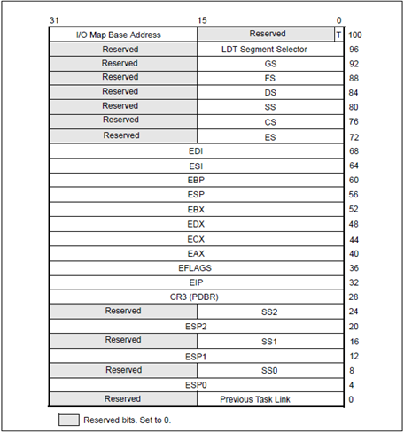
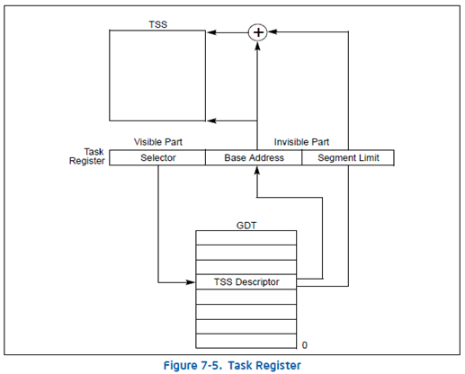
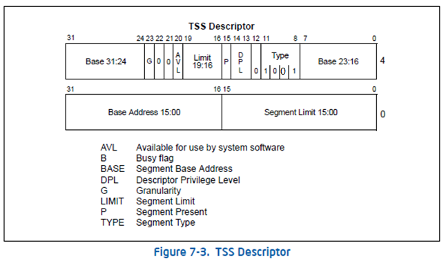
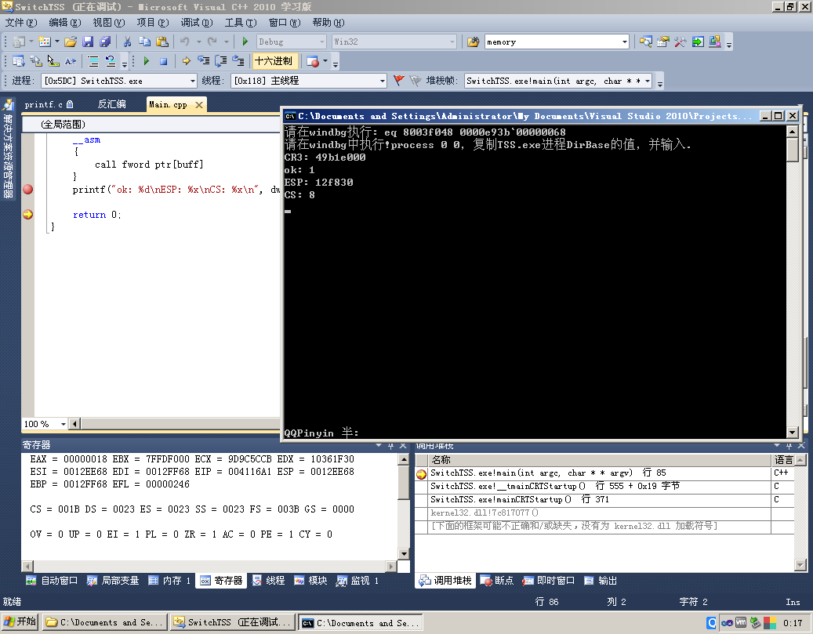
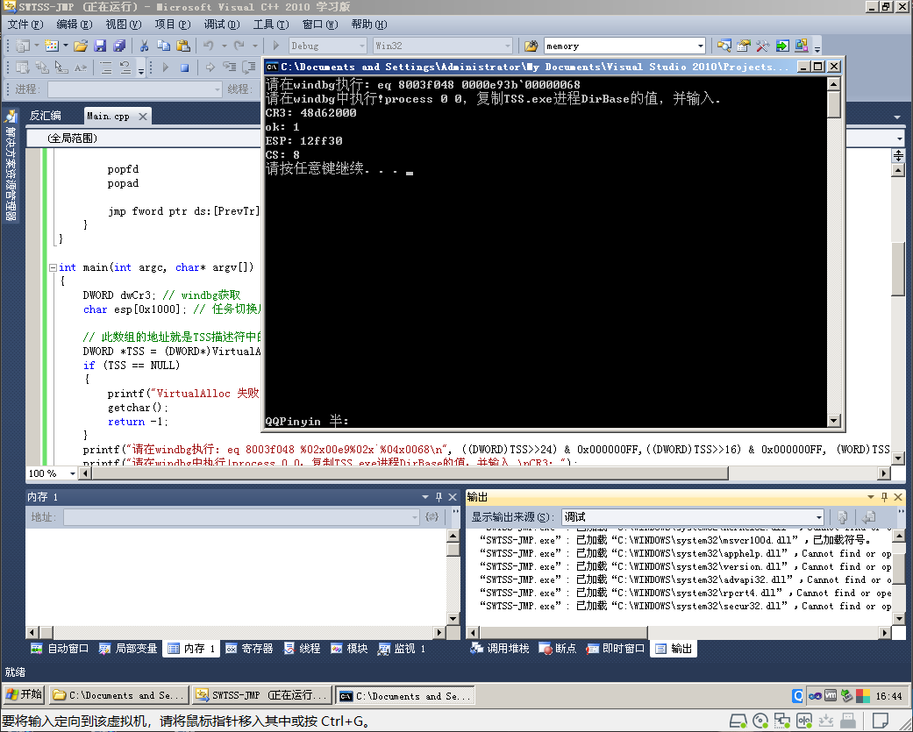
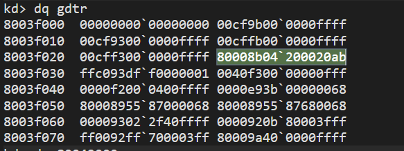
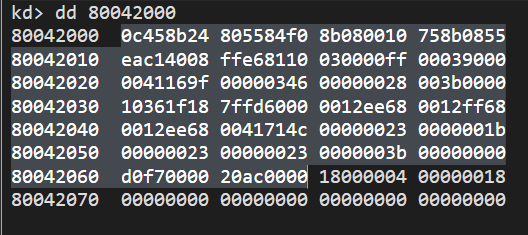

# 前言
当权限发生发生改变时堆栈也会随之发生改变 (如：3 环进 0 环)，由于 CS 的 CPL 发生变化，导致了 SS 也必须切换。
堆栈段寄存器 SS（Stack Segment），指出当前堆栈的底部地址，即存放堆栈段的段基址。
当发生权限切换的时候，会有新的 ESP 和 SS（CS 是由中断门或者调用门指定），那么 ESP 和 SS 从何而来呢？
答案：TSS (Task-state segment)，任务状态段
# TSS (Task-State Segment) 任务状态段的结构

TSS 是一块内存，大小 104 字节。
# TSS 的作用
这关乎于：Intel 的设计思想和操作系统的设计思想
TSS 里存储了段寄存器，通用寄存器，标志寄存器，EIP，CR3 寄存器，4 个堆栈
TSS 的设计初衷是任务切换 (线程切换)，当线程切换的时候，同时替换寄存器的值，可是操作系统 (Windows，Linux) 并没有使用 TSS 来切换线程。
但我们却可以用 TSS 做其他事情。☺
那我们就要学习 CPU 是如何使用 TSS 的了。
# CPU 如何找到 TSS？
答案：TR 寄存器
通过 TR 寄存器的段选择子，查询 GDT 表，找到 TSS 段描述符，然后获取 TR 的 Base , Base 中存储的就是 TSS 的地址， Limit 中存储的是 TSS 的大小
如图所示:

# TSS 段描述符

- 当 TYPE 位为 9 (1001) 的时候，说明这个段描述符是一个 TSS 段描述符，这个段描述符没有加载到 TR 寄存器中
- 当 TYPE 位为 B (1011) 的时候，说明也是 TSS 段描述符，这个段描述符已经加载到了 TR 寄存器中
# TR 寄存器的读写
- 将 TSS 段描述符加载到 TR 寄存器
指令： LTR
用 LTR 指令去装载 TR 寄存器，仅仅是改变了 TR 寄存器里面的内容 (96 位)
并没有真正改变 TSS，原来的 TSS 还在。
LTR 指令只能在系统层使用
加载后 TSS 段描述符会 TYPE 位发生改变 1001->1011，9 变成 B，说明这个段描述符被加载到了 TR 寄存器
- 读 TR 寄存器
指令：STR
如果用 STR 去读 TR 寄存器，只能读到 TR 寄存器的 16 位，也就是段选择子，和读普通段寄存器一样，96 位只能读出其中 16 位
# 修改 TR 寄存器
在 Ring0 我们可以通过 LTR 指令去修改 TR 寄存器
在 Ring3 我们可以通过 CALL FAR 或者 JMP FAR 指令来修改
用 JMP 去访问一个代码段的时候，改变的是 CS 和 EIP ：
JMP 0x48:0x123456 如果 0x48 是代码段
执行后：CS-- > 0x48 EIP-- > 0x123456
用 JMP 去访问一个任务段的时候：
如果 0x48 是 TSS 段描述符，先修改 TR 寄存器，在用 TR.Base 指向的 TSS 中的值修改当前的寄存器
JMP 指令会清当前 TR 所使用的的 TSS descriptor 的 Busy 位是当前 TSS descriptor 置为 available 状态
如果使用 CALL 指令进行调用，将会在新的 TSS 段里的 LINk 域写入原 TSS selector 值。
使用 CALL 指令进行调用时，Eflags.NT 标志位会被处理器进行置位，指示新的 task 进入 Nested（嵌套）状态。JMP 指令则相反，Eflags.NT 标志位会被进行清位。
NT=0 IRET 指令 堆栈取返回地址
NT=1 IRET 指令 返回时会找 TSS 的 LINK 域的值
# 实践：加载自定义 TSS
知道了原理，我们就可以在这个过程中动些手脚。
CPU 通过 TR 寄存器来找到 TSS，如果我们使用自己的 TSS 来替换原来的寄存器，就必须要修改 TR 寄存器，TR 寄存器里面的值又是来自 TSS 段描述符。
首先我们要构建 TSS 段描述符
G 位为 0，粒度为字节，TSS 以字节为单位Segment Limit 必须得大于等于 67H
BASE+G+AVL+LIMT + P+DPL+TYPE + BASE +BASE +Segment Limit
00 00 E(1110)+9(1001) 00 0000 0068
暂取 TSS 段描述符为 0000E900`00000068 Base 的值填写的是内存中 tss 结构的地址。
新的 TSS 段必须要指定要素： EIP 、 ESP 、 CS 、 SS 以及 CR3 的值。
ESP 的值：定义局部数组作为裸函数的栈，因为我们不知道进入 0 环后哪里的堆栈地址可以使用，所以需要自己指定一个可以使用的地址，传给 TSS [14] 时，应该传数组尾部的指针，因为压栈 ESP 减小，如果传数组首地址，那一压栈就越界了。
# 使用 CALL 去访问一个任务段，并能够正确返回
#include<stdio.h> | |
#include<Windows.h> | |
DWORD dwOk; | |
DWORD dwESP; | |
DWORD dwCS; | |
// 任务切换后的 EIP | |
void __declspec(naked) R0Func() | |
{ | |
__asm | |
{ | |
pushad | |
pushfd | |
push fs | |
int 3 //int 3 会修改 FS | |
pop fs | |
mov eax,1 | |
mov dword ptr ds:[dwOk],eax | |
mov eax,esp | |
mov dword ptr ds:[dwESP],eax | |
mov ax,cs | |
mov word ptr ds:[dwCS],ax | |
popfd | |
popad | |
iretd | |
} | |
} | |
int main(int argc, char* argv[]) | |
{ | |
DWORD dwCr3; //windbg 获取 | |
char esp[0x1000]; // 任务切换后的栈 | |
// 此数组的地址就是 TSS 描述符中的 Base | |
DWORD TSS[26]; | |
// 也可以直接开辟一块私有内存 | |
//DWORD *TSS = (DWORD*)VirtualAlloc(NULL,104,MEM_COMMIT,PAGE_READWRITE); | |
//if (TSS == NULL) | |
//{ | |
// printf ("VirtualAlloc 失败，% d\n", GetLastError ()); | |
// getchar(); | |
// return -1; | |
//} | |
printf("请在windbg执行: eq 8003f048 %02x00e9%02x`%04x0068\n", ((DWORD)TSS>>24) & 0x000000FF,((DWORD)TSS>>16) & 0x000000FF, (WORD)TSS); | |
printf("请在windbg中执行!process 0 0，复制进程DirBase的值，并输入.\nCR3: "); | |
scanf("%x", &dwCr3); // 注意是 % x | |
TSS[0] = 0x00000000; // Previous Task Link CPU 填充，表示上一个任务的选择子 | |
TSS[1] = 0x00000000; // ESP0 | |
TSS[2] = 0x00000000; // SS0 | |
TSS[3] = 0x00000000; // ESP1 | |
TSS[4] = 0x00000000; // SS1 | |
TSS[5] = 0x00000000; // ESP2 | |
TSS[6] = 0x00000000; // SS2 | |
TSS[7] = dwCr3; // CR3 学到页就知道是啥了 | |
TSS[8] = (DWORD)R0Func; // EIP | |
TSS[9] = 0x00000000; // EFLAGS | |
TSS[10] = 0x00000000; // EAX | |
TSS[11] = 0x00000000; // ECX | |
TSS[12] = 0x00000000; // EDX | |
TSS[13] = 0x00000000; // EBX | |
TSS[14] = (DWORD)esp+0x1000; | |
TSS[15] = 0x00000000; // EBP | |
TSS[16] = 0x00000000; // ESI | |
TSS[17] = 0x00000000; // EDI | |
TSS[18] = 0x00000023; // ES | |
TSS[19] = 0x00000008; // CS | |
TSS[20] = 0x00000010; // SS | |
TSS[21] = 0x00000000; // DS | |
TSS[22] = 0x00000000; // FS | |
TSS[23] = 0x00000000; // GS | |
TSS[24] = 0x00000000; // LDT Segment Selector | |
TSS[25] = 0x20ac0000; // I/O Map Base Address | |
char buff[6] = {0,0,0,0,0x48,0}; | |
__asm | |
{ | |
call fword ptr[buff] | |
} | |
printf("ok: %d\nESP: %x\nCS: %x\n", dwOk, dwESP, dwCS); | |
return 0; | |
} |

# 使用 JMP 去访问一个任务段，并能够正确返回
和 CALL FAR 对比，NT 位不会置 1，TSS previous task link 也不会填充旧的 TR，因此想要返回，可以先保存旧的 TR，然后 JMP FAR 回去。
#include <Windows.h> | |
#include <stdio.h> | |
DWORD dwOk; | |
DWORD dwESP; | |
DWORD dwCS; | |
BYTE PrevTr[6]; // 旧 TR，供裸函数返回 | |
// 任务切换后的 EIP | |
void __declspec(naked) R3Func() | |
{ | |
__asm | |
{ | |
pushad | |
pushfd | |
push fs | |
int 3 //int 3 会修改 FS | |
pop fs | |
mov eax,1 | |
mov dword ptr ds:[dwOk],eax | |
mov eax,esp | |
mov dword ptr ds:[dwESP],eax | |
mov ax,cs | |
mov word ptr ds:[dwCS],ax | |
popfd | |
popad | |
jmp fword ptr ds:[PrevTr] | |
} | |
} | |
int main(int argc, char* argv[]) | |
{ | |
DWORD dwCr3; //windbg 获取 | |
char esp[0x1000]; // 任务切换后的栈，数组名就是 ESP | |
// 此数组的地址就是 TSS 描述符中的 Base | |
DWORD *TSS = (DWORD*)VirtualAlloc(NULL,104,MEM_COMMIT,PAGE_READWRITE); | |
if (TSS == NULL) | |
{ | |
printf("VirtualAlloc 失败，%d\n", GetLastError()); | |
getchar(); | |
return -1; | |
} | |
printf("请在windbg执行: eq 8003f048 %02x00e9%02x`%04x0068\n", ((DWORD)TSS>>24) & 0x000000FF,((DWORD)TSS>>16) & 0x000000FF, (WORD)TSS); | |
printf("请在windbg中执行!process 0 0，复制进程DirBase的值，并输入.\nCR3: "); | |
scanf("%x", &dwCr3); // 注意是 % x | |
TSS[0] = 0x00000000; // Previous Task Link CPU 填充，表示上一个任务的选择子 | |
TSS[1] = 0x00000000; // ESP0 | |
TSS[2] = 0x00000000; // SS0 | |
TSS[3] = 0x00000000; // ESP1 | |
TSS[4] = 0x00000000; // SS1 | |
TSS[5] = 0x00000000; // ESP2 | |
TSS[6] = 0x00000000; // SS2 | |
TSS[7] = dwCr3; // CR3 学到页就知道是啥了 | |
TSS[8] = (DWORD)R3Func; // EIP | |
TSS[9] = 0x00000000; // EFLAGS | |
TSS[10] = 0x00000000; // EAX | |
TSS[11] = 0x00000000; // ECX | |
TSS[12] = 0x00000000; // EDX | |
TSS[13] = 0x00000000; // EBX | |
TSS[14] = (DWORD)esp+0x1000; | |
TSS[15] = 0x00000000; // EBP | |
TSS[16] = 0x00000000; // ESI | |
TSS[17] = 0x00000000; // EDI | |
TSS[18] = 0x00000023; // ES | |
TSS[19] = 0x00000008; // CS | |
TSS[20] = 0x00000010; // SS | |
TSS[21] = 0x00000000; // DS | |
TSS[22] = 0x00000000; // FS | |
TSS[23] = 0x00000000; // GS | |
TSS[24] = 0x00000000; // LDT Segment Selector | |
TSS[25] = 0x20ac0000; // I/O Map Base Address | |
char buff[6] = {0,0,0,0,0x48,0}; | |
__asm | |
{ | |
str ax | |
lea edi,[PrevTr+4] | |
mov [edi],ax | |
jmp fword ptr[buff] | |
} | |
printf("ok: %d\nESP: %x\nCS: %x\n", dwOk, dwESP, dwCS); | |
system("pause"); | |
return 0; | |
} |

由这个例子我们可以发现系统的 TSS 描述符为 80008b04`200020ab （TR 的段选择子为 0x28）

系统 TSS 的地址为： 80042000 ，查看一下。

# Reference
https://blog.csdn.net/Kwansy/article/details/108890586
https://www.cnblogs.com/revercc/p/14468330.html